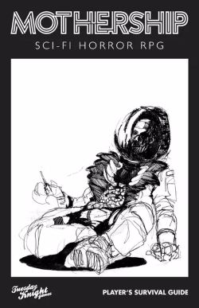

J Austin Hutchinson
About Me
I was born and raised in Georgia. I served a religious mission for the Church of Jesus Christ of Latter day Saints, working in Mozambique for two years before moving to UT to pursue further education. I've worked for several large financial firms in various IT related roles. I am married.
Mothership
A Tabletop RPG designed to emulate sci-fi horror in the vein of Alien, Dead Space, Metroid, and System Shock. The four classes provided in the core rules are Teamster, Marine, Scientist, and Android. It utilises a stress system to simulate the players characters growing unease and panic as the game progresses. It is commonly abbreviated as "MOSH".